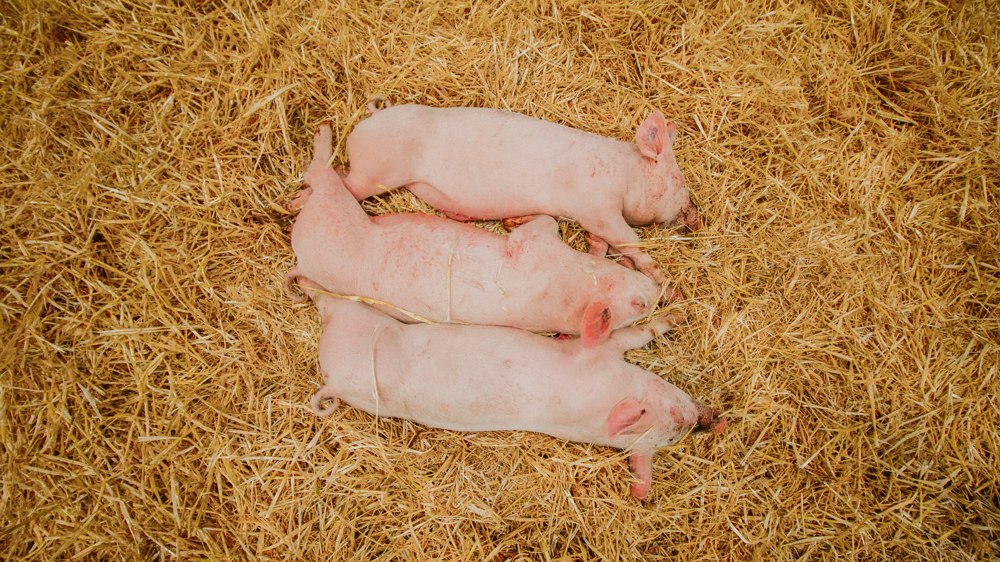
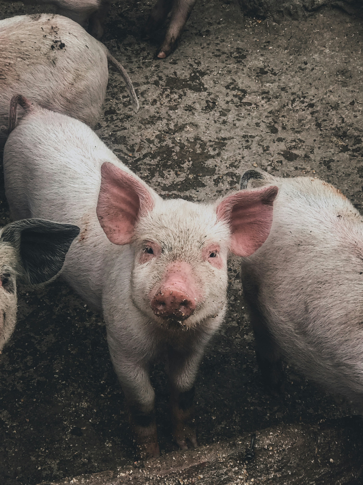
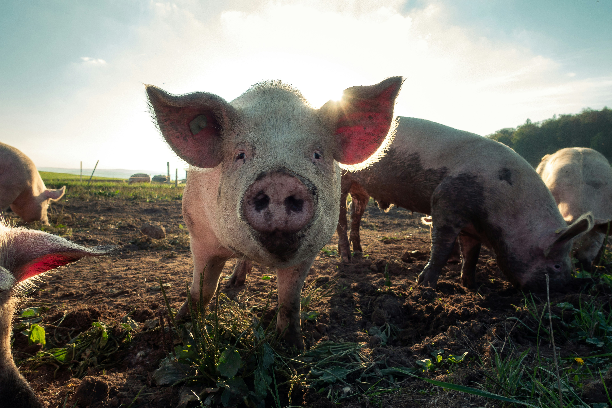
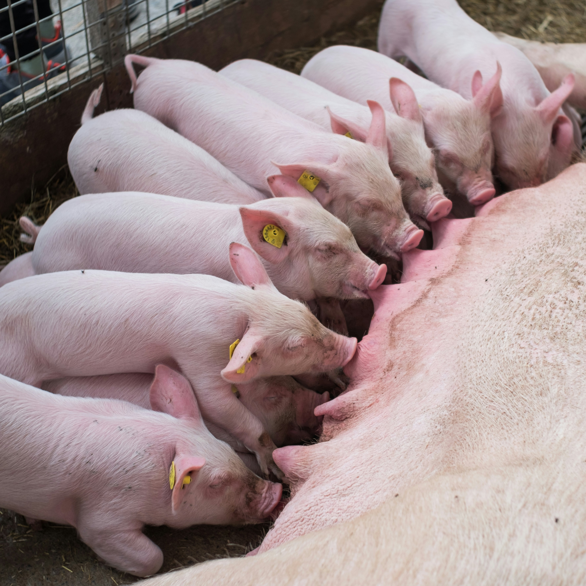

Manejo no Escamoteador
Içamento seguro no processamento e vacinação, aproximando os animais do corpo para proteger a coluna lombar.
“Onde o cuidado encontra a inovação, o movimento se transforma em saúde.”
Este projeto foi desenvolvido para promover mais saúde, segurança e qualidade de vida no ambiente de trabalho, por meio de orientações simples e acessíveis. A plataforma reúne informações sobre postura, prevenção de dores, exercícios, alongamentos, pausas ativas e movimentação de cargas, ajudando os trabalhadores a cuidar melhor do corpo.

A ergonomia busca tornar o trabalho mais seguro, confortável e adequado às necessidades do trabalhador.
Por meio de cuidados com a postura, movimentos, organização das atividades, pausas e uso correto dos equipamentos, é possível reduzir sobrecargas, prevenir dores e contribuir para mais saúde e qualidade de vida durante a jornada de trabalho.
Adequação física aos processos de parto, medicação de leitões e desmame.
Redução drástica de sobrecargas e dores na coluna lombar e joelhos.
Manutenção da integridade física com aumento de produtividade e bem-estar.
Clique nos pinos interativos sobre a imagem ou nos botões laterais para visualizar as orientações ergonômicas da rotina com os animais.

A contenção e medicação de leitões exigem flexão da coluna lombar. Mantenha o corpo próximo à baia, flexione os joelhos e evite torções.
A preservação da saúde postural do trabalhador em cada etapa da produção.

Içamento seguro no processamento e vacinação, aproximando os animais do corpo para proteger a coluna lombar.

Mantenha os joelhos flexionados e utilize apoio adequado ao inspecionar as matrizes e leitões lactantes.

Postura ereta e passos firmes durante o monitoramento da granja e instalações a céu aberto.
Uma postura adequada ajuda a reduzir a sobrecarga sobre a coluna, músculos e articulações.
Selecione um segmento corporal no menu lateral. Os exercícios têm finalidade educativa e preventiva.
“Pare por alguns minutos. Movimente-se. Volte ao trabalho com mais cuidado.”
Ações essenciais de proteção na infraestrutura da suinocultura e transporte de materiais.
Os Equipamentos de Proteção Individual ajudam a proteger o trabalhador. O equipamento deve ser adequado ao risco e utilizado corretamente.
“Não é apenas o peso da carga: a forma como você movimenta também importa.”
Verifique peso e tamanho. Planeje o caminho. Aproxime-se e utilize auxílio mecânico quando necessário.
Mantenha pés firmes. Flexione os joelhos. Carga próxima ao corpo. Levante utilizando as pernas. Evite girar o tronco.
Evite transportar objetos que impeçam sua visão. Não carregue peso acima da sua capacidade. Utilize carrinhos.